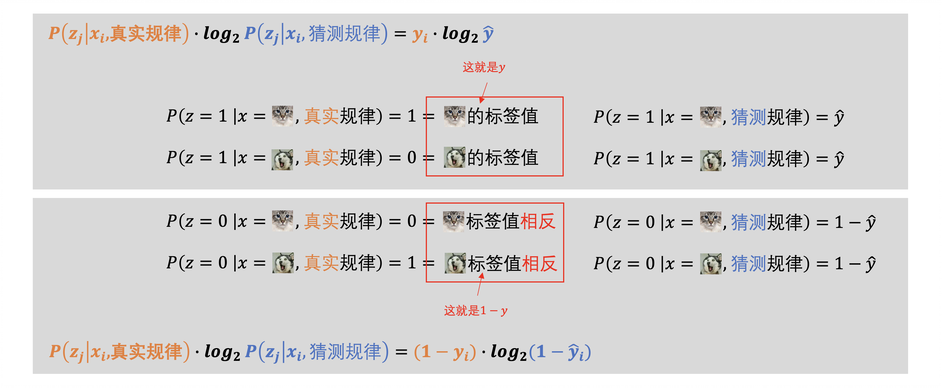

交叉熵如何做损失函数？
本文最后更新于：2 天前
“最大似然估计”为什么又叫“交叉熵”
下面这个是吴恩达大佬在他的课程里面写出来的最大似然估计法的公式，\(y\)是标签值， \(\hat{y}\)是神经网络的估计值。 \[ \mathscr{L}\left(\hat{y}, y\right) = -\left(y\log\hat{y} + \left(1-y\right)\log\left(1-\hat{y}\right)\right) \] 这个的确是用最大似然估计法写出来的损失函数，但是，只要你对损失函数有了解，就可能见到过，同样的这个公式也叫交叉熵，或者说是最小交叉熵方法。
这就是有疑问的地方了，同样一个东西，为什么既可以叫这个名字，又可以叫那个名字。如果，两个名字相似也就算了，关键是“最大似然估计”和“交叉熵”两个没有丝毫相似的地方，为什么可以表示同一种东西呢？
这就需要搞明白交叉熵到底是什么东西了，等把它搞明白之后，你就会明白，交叉熵和最大似然估计，虽然它们设计损失函数的思路不同，但是它们却是殊途同归，本质上是相同的。
本章将会了解以下内容：
- 如何比较两个不同的概率分布？
- 什么是信息量？信息量是如何定义出来的？
- 什么是熵？
- 什么是KL散度（相对熵）和交叉熵？
- 用交叉熵如何设计损失函数？真的和最大似然估计法没有区别吗？
熵可以让不同的类型的概率分布实现公度
还是拿分类问题来举例，给了一堆猫狗的照片要把它们正确的分开，猫狗的区别这是有一个客观的规律的。我们上一次也讲过了，这个客观的规律，我们可以用函数来表示，也可以概率分布来表示。
假如说，这个真实的规律我们可以用\(P\left(y,\,x\,|\,\text{真实规律}\right)\)来表示，其中\(y\)判断结果，\(x\)是输入的图片，如果以真实规律作为条件，那么输入的图片一定能准确地判断出是猫还是狗。那机器学习呢？其实就是在计算机里面尽可能没有差别地把这个\(P\left(y,\,x\,|\,\text{真实规律}\right)\)概率分布学出来。
这里就出现一个关键问题了，假如说机器学习算法做出了一个猜测，\(P\left(y,\,x\,|\,\text{真实规律}\right)\)。我们应该如何判断，这个猜测出来的概率分布与表示真实规律的概率分布是不是一样的？
其实不只是是判断出来“一样”还是“不一样”就可以了，还需要知道它们之间的差距有多大，这样才能帮助机器学习的算法调整和修改，越来越接近真实规律。
那么如何才能对两个概率分布做出比较呢？
如果是同一类的概率分布的话，那还好办。比如说，都是正态分布，影响分布的参数就两个，一个均值一个方差。只需要判断真实规律和猜测规律里面这两个参数是不是一样，不一样的话看看参数差了多少，就行了。
但真实的情况却不是这么简单，真实规律表现出来是什么样子的，我们根本不知道，别说我们根本无法确定真实规律那个概率分布到底是什么类型的，就算是确定了，决定它的参数也可能有很多，无法进行简单地比较。
于是，比较两个概率分布的最大障碍出现了。两个不同类型的概率分布，它们无法直接公度。
那怎么办呢？有什么方法可以让无法公度的两个概率分布，变得可以公度吗？
这件事上，虽然不能一下子想到解决方法，但是说到公度的话，我们的世界里有一个特别伟大的系统，通过它可以让许多本来无法公度的事情变得可以公度，这或许可以给我们带来启发。
这个系统就是货币系统，它让许多无法公度的事情，都可以变成一个价格数字，通过价格就能进行比较了。
就比如，一个房子，你家里的老房子，在里面有几代人的记忆，对于你来说这个房子是价值很大的。但是，对于买房的人来说，这并没有什么特殊的，他心中这个房子的价值一定不如你。这本来是一个无法公度的事情，因为你们选择的根本就是不同的价值体系。
不过没有关系，只要把房子放到货币体系里面，货币体系就可以完成对这个房子价值的评估，在你和买房人之间寻找到一个价值平衡点。
虽然价格体系的运行方式很复杂，但是有一点是能给我们启发的，那就是不论是什么东西，它都可以把它们换成一串数字，变成数字之和就可以进行公度了。
那么不同类型的概率分布，它们是不是也可以有类似的方法，先把它们转换成一串数字，将这个数字作为他们进行公度的代表。
还真有，这个概率分布的“货币体系”就是熵。
所有的概率分布，都可以统一地被转换成熵，比较两个概率分布是不是相同，不同的话，它们之间又相差多少，都可以用熵来进行衡量了。
那到底是什么是熵呢？在了解它之前，我们还需要了解一个前置概率，信息量。
信息量是什么
信息量这个词我们还是比较熟悉的，在日常口语中我们就在使用，假如说你看新闻刷到一个惊天大瓜，你可能就会感叹说这个新闻的信息量太足了。
什么是信息？一条信息的功能就是让你从“不知道”变得“知道”，信息量肯定就是对信息的这个功能进行的度量了。可是，如果信息的使命就是让“不知道”变成“知道”，也就是说这是一个“是否”的二值问题，那信息也就没有度量的必要了，反正就两种情况。
关键是，一条信息不是“知道”和“不知道”非此即彼的，它还能让你既不是完全不知道，又不是完全知道。如果是这样的话，那对信息进行度量就有意义了，就是去度量一下这个“知道”的程度。
这种既不是完全不知道，又不是完全知道的状态还真有，举个例子。假如说有8只球队参加世界杯，有这样两种情况：
- 如果你什么消息都没有听说，有人问你阿根廷夺冠没有啊，你回答说不知道。
- 随后，你看到一个消息，说阿根廷已经进决赛了，这个时候再问你阿根廷夺冠没有啊，你还是说不知道。
虽然两种情况，你对阿根廷是否夺冠回答的都是不知道，但是这里的“不知道”和“不知道”还是很不一样的。\(a\)情况的不知道，因为还没有比赛所以阿根廷夺冠的概率是\(\frac{1}{8}\)，b情况阿根廷已经进到决赛了，虽然还没有最终夺冠，但是夺冠的确定性已大大增加，已经达到了\(\frac{1}{2}\)。
所以说，“阿根廷进决赛”这个消息，让你对阿根廷夺冠这个事件，从完全不知道，到有些知道了。也就是说，这个消息它应该是有信息量的。
从前面这个例子，我们也能看出来对于阿根廷夺冠这件事，不同的消息含有的信息量很可能是不同的。
如果我和你说，我今天中午多吃了一个包子，这虽然也是个消息，但是这个消息对于阿根廷夺冠来说信息量就\(0\)。
总结一下的话，其实我们应该有这一个感觉了，定性上来说，信息量它应该是，某个消息对“某个事件的确定程度改变了多少”进行的衡量。而确定性改变了多少，其实也就是前面说的那个概率的改变，阿根廷夺冠从原来的\(\frac{1}{8}\)变成了\(\frac{1}{2}\)。
但是定量上来说，信息量到底是多少呢？难道就是凭着直觉，简单地用\(\frac{1}{2}\)减去\(\frac{1}{8}\)，用这个差值去定义信息量吗？ 没有这么简单。
信息量的良定义
要想对信息量给出一个良定义，不能产生自我矛盾，就需要考虑一下不同情况中，我们对信息量的理解是什么样的。
就比如，我们可以看这样一种情况。
这里的3个箭头代表着3个消息，绿色消息是阿根廷进入了决赛，蓝色消息则是阿根廷直接夺得冠军，这两个消息的起点都是一样的，都是在你不知道任何比赛结果的时候听到的消息。
而橙色消息，它则是依赖于绿色消息的，它代表的是，在你知道阿根廷进决赛之后，又赢得决赛夺得冠军。
如果我们想要信息量来衡量3个消息，那么我们可以看出信息量应该满足下面等式：
- $信息量(蓝色消息)=信息量(绿色消息)+信息量(橙色消息) $
一个消息的信息量具体是多少，虽然我们现在还不知道，但是我们可以确定，这个信息量应该是和对应事件发生的概率有关。于是我们就可以拿这个概率作为变量，那计算信息量这个函数应该如下：
- \(信息量(\frac{1}{8})=信息量(\frac{1}{4})+信息量(\frac{1}{2})\) —— ①
到这里其实还没有完，因为函数里的变量是概率，根据条件概率的性质，我们知道这里还隐含着一个条件，那就是：
- \(P(夺冠)=P(夺冠|进决赛)×P(进决赛)\) —— ②
把①和②一结合，我们就可以发现这样一个关系：
- \(信息量(\frac{1}{4} × \frac{1}{2})=信息量(\frac{1}{4})+信息量(\frac{1}{2})\)
仔细看一下这个式子就能发现，计算信息量的这个函数，如果想要自洽、想要是良定义的，那么它必须满足一个条件，那就是自变量的乘法等于函数值的加法。
满足这样这样的函数应该是什么样子的？
理论上来说，满足这个性质的函数应该是有千千万万的，但是其中最简单的应该就是对数运算log了。log对数运算是唯一满足这种关系的初等函数。
到现在，我想大家心中都会有一个冲动，就是把信息量定义为： \[ \text{信息量}\left(P\left(X\right)\right) :=?log_?P\left(X\right) \] 不论是说奥卡姆剃刀原理，还是说人们本能的喜欢偷懒，这个用最简单的方式给出定义的冲动都特别正常。我想，当年香农给出信息量的定义的时候，也是这么想的。
接下来需要确定的就是这个式子里的两个问号了，系数是多少？对数的底又是多少？
一切都为了简单，不考虑别的话，系数应该就是\(1\)了，只不过需要确定的是，到底是\(1\)还是\(-1\)。
如果硬规定，系数就是1也行，只不过我们现在做的并不是完全凭空发明出信息量这个概念，如果是凭空创造出来的，那么发明人怎么定那我们就怎么用。我们现在面对的问题是，信息量这个概念，我们在日常生活中就在用，只不过定理的定义不是很清晰，我们现在做的其实是把这个定义换成更精确的数学方式表达出来，所以数学的定义不应该和我们的口语表达有冲突。
所以到底是\(1\)还是\(-1\)，就需要看一下我们口语中，自变量（也就是那个概率值）越大函数值越大，还是自变量越小函数值越大了。
还是看上面阿根廷夺冠的例子，绿色消息是阿根廷进入决赛，蓝色消息是阿根廷夺得冠军，一个发生的概率是1/4，一个发生的概率是1/8，单从概率的数值上来看的话，显然绿色消息值更大。但是这两个消息那个信息量更大呢？
我们的感觉肯定是蓝色的消息信息量更大啊，绿色的消息只是让阿根廷夺冠这件事概率增加了，并没有完全确定，而蓝色消息却是给出了一个完全确定的结果，显然蓝色的消息带来的不确定程度的改变更剧烈，也就是带来的信息量更大。
所以信息量，它的自变量和函数值应该是一个反比关系，也就是第一个问号，那个系数应该是\(-1\)。 \[ \text{信息量}\left(P\left(X\right)\right) :=-log_?P\left(X\right) \] 剩下没有确定的就是对数运算的底了，这里底到底取多少，其实已经不那么重要了，可以取\(e\)为底，也可以取\(10\)为底，还可以取\(2\)为底。当然，现在我们习惯的方式用2为底，这样子计算出来的信息量单位是比特。
取不同的底，其实就是信息量的单位不同，以\(e\)为底的单位是纳特(nat)或者是nit，以\(10\)为底的单位是哈特(Hart)或者是dit。
其中比特我们最熟悉，这最早是由香农提出来的。而以\(10\)为底的信息量，最早是1928年有拉尔夫·哈特利(Ralph Hartley)提出来的，后来图灵也用\(10\)为底计算过信息量，只不过图灵把这样的信息量单位称为ban。
这里值得注意的是，信息量是有单位的（也就是说信息量有量纲）。什么意思呢？这里用bit作为例子来说明一下。
我们知道，说到单位，比如说米、千克，它们都是有一个基准尺度的，具体长度是多少、质量是多少，都是与这个基准尺度做比较得出来的。比如，曾经米的基准就是子午线的千万分之一，后来才改成用光速定义，公斤的基准尺度曾经是用放在法国的国际千克原器的质量，后来才改成用普朗克常数定义。
既然信息量也是有单位的，那么这个bit单位的基准尺度是什么呢？
其实bit就是用像抛硬币这种“\(50\%\)正、\(50\%\)反”的情况作为基准尺度的，其他的bit数值都是与这个基准尺度比较得到的。
\(\frac{1}{2}\)概率的事件是\(1\)bit，\(\frac{1}{4}\)概率的事件是\(2\)bit，这就是说这两个概率分别可以用\(1\)个硬币和\(2\)个硬币等价表示。至于\(\frac{1}{3}\)的概率，对应的信息量是约等于\(1.58\)bit。虽然我们现实中不可能是抛\(1.58\)个硬币，但是数学上还是可以这样来表示出来的。
这里再多说一下，在计算机里面，我们经常说\(8\)bit、\(16\)bit这些词，这些词不只表示一个信号里面含有的信息量，还用来表示存储空间的大小。
这是为什么呢？
举个例子，假如说计算机里面有一个\(16\)bit的空间，这个空间里0、1、0、1到底是怎么排列组合的，是不确定的，任何一种情况的概率都是\(\frac{1}{2}^{16}\)。当计算机接受到1个信息，这里的空间存储上了一个2进制数字（具体是什么数字无所谓），这里的可能性就从原来的\(\frac{1}{2}^{16}\)概率变成了确定的\(1\)，这个信息量是多少？就是\(16\)bit啊。这个空间最多可以承载多少的信息量？就是\(16\)bit了。
于是存储空间的大小和信息量统一了，这也是bit又可以表示存储空间的原因。
熵是一个系统里信息量的期望值
对信息量了解之后，我们就可以来看熵了。
熵这个概念，现在已经比较出圈了，本来一个学科里面很偏门的概念，现在在互联网圈子里面却人尽皆知。
主要就是熵增这个概念太火了，它涉及到了整个宇宙的宿命，宇宙的未来就是在不可对抗的熵增过程中归于热寂。那熵到底是什么呢？在科普内容里面，很少有人把熵的定义公式拿出来讲的，都是说熵是对一个系统的混乱程度的度量。
当初的先贤们是如何提出熵这个概念的，他们最初的想法是什么，我们很难还原了，不过我们现在还是可以对熵做逆向工程，试着来理解一下，前面说的系统的混乱程度到底是什么意思？为什么用信息量可以去描述系统的混乱程度？
我们可以先来看这样一个问题，有两场比赛，假如说这两场比赛就是两个系统。
一场比赛是比利时对战阿根廷（系统1），因为它们水平差不多，所以两队赢球的概率都是\(50\%\)。另一场比赛是法国对中国（系统2），实力相差比较大，所以法国赢球的概率\(99\%\)，中国赢球的概率是\(1\%\)。
请问，这两个系统那个的混乱程度更高？
这个问题并不是靠直觉马上就能回答出来的，还是要琢磨一下。法国对中国，这个系统不出意外的话，肯定是法国赢，也就是最后的结果确定性更高。而比利时对阿根廷，这个就不能说意外不意外了，谁赢都有可能，所以最后结果是什么就很不确定。
这里我是用不确定的程度来描述两场比赛的，其实这个不确定的程度也就是我们日常说的混乱程度，比利时和阿根廷比赛，因为结果特别不确定，所以很混乱。反过来说你，一个屋子很混乱，也就是你的袜子到底在哪里，非常不确定。
既然和概率、不确定性搭上关系了，那么我们前面介绍的信息量就可以派上用场了。
两次比赛，分别对应着两个可能的事件（系统1是“比利时赢”和“阿根廷赢”两个事件，系统2是“法国赢”和“中国赢”两个事件），它们对应的信息量计算结果出来如下：
比利时对阵阿根廷，不论谁获胜，信息量都是1bit。法国对阵中国，法国赢球的概率很高，所以他们赢球带来的信息量就很少，但是如果中国赢球了，那这个信息量就很大了，超过了6.6bit。
这么看的话，系统1这个系统里两个事件的信息量加起来才是2bit，还没有中国赢球一个事件的信息量大，如果用信息量来表示熵，是不是就会有问题啊。明明系统1更不确定，但是计算出来却是系统1的信息量更少。
别急，熵的确是“系统里面所有可能事件对应的信息量总和”，只不过不是把它们简单地加起来就行了，而是需要加权求和。这个权重是什么？就是这个事件发生的概率啊。
加上权重之后，就合理了，从上图就可以看出系统1得到的值的确是比系统2更大了。
而且这个加上权重的动作也挺合理的，就比如说，中国队夺冠了这个事情如果发生了的话，信息量的确还挺大的，但是它得真发生了才行了，可事实呢，它只有1%的可能性发生，99%的可能性都是法国夺冠。
所以，一个系统到底含有多少信息量，那还需要看具体一个事件对整个系统到底能贡献多少信息量才行。如果事件没发生，那就是没有贡献啊，就不能放在总和里面。越是一个事件贡献了多少信息量，就可以理解成信息量乘上对应事件发生的概率。
那熵到底是什么？这个问题就简单了，熵就是所有事件对应的信息量的加权和，那这个加权和是什么？就是这个系统里面信息量的期望值啊。
那么我们就可以对熵做出如下定义了，其中\(H\left(S\right)\)表示\(S\)系统的熵，\(E\)是求期望，\(I(X)\)是求信息量，\(P\left(x_i\right)\)表示\(x_i\)事件的概率。
现在我们已经知道熵到底是什么了。我们最开始的目的是什么？是比较两个概率分布，一个表示真实的规律，一个表示机器学习猜测的规律，看看两个概率分布它们相差有多少。
现在有了熵，我们是不是就可以直接比较两个概率分布的差距了呢？把两个概率分布的熵都算出来，然后看看相差多少。
哪有这么简单，别忘了，真实规律我们是不知道的，既然不知道，那它的熵还怎么求呢？没有办法。
那么有没有什么方法，即便不知道一个概率分布的熵具体是多少，也能知道两个概率分布之间的差距是多少呢？ 有！这就是KL散度和交叉熵了。
KL散度（相对熵）和交叉熵
假如说，下面这个图表示的是两个系统的概率分布，其中系统\(S\)代表的是真实的规律，系统\(O\)代表的是机器学习模型里面猜测的那个规律。
这两个系统的概率分布如果是相同的话，那么毫无疑问，两个系统的熵也一定是相等的，而且我还能大概确定，两个系统越像，熵应该是越接近的。
不过，这个事情不能反过来想，两个系统的熵相同，两个系统的概率分布就一定相同吗？好像并没有这么简单，因为简单的一个数字，维度太少了。一张200元的高铁票和一件200元的衣服，它们价格相同，但是这两个东西却是天差地别。
所以，看两个系统是不是相同，不能是直接比较两个系统的熵，这会太简单粗暴。那怎么办呢？这个时候就需要KL散度这个概念了。
KL散度就不是粗暴的比较一个总体的熵了，而是比较得更细致，每一个事件\(x_i\)对应的信息量，都会拿来进行比较。如果每一个事件的信息量都是相同的，那么两个概率分布肯定就是相同的了。
于是KL散度就可以做出如下定义：
可以注意到，这个定义本质上也是一个加权求和，求和的是两个系统中同一个事件的信息量的差值，加的那个权重是其中一个系统里这个事件的概率值。从这里也能看出来，这里的系统\(S\)和系统\(O\)，它们并不是平等的，把\(S\)和\(O\)交换之后并不能保证得到相同的值。 \[ D_{KL}\left(S\,\|\,O\right)\neq D_{KL}\left(O\,\|\,S\right) \] 也就是说，KL散度它相当于会在两个系统中挑选了一个作为基准（我这里用的是\(S\)系统作为基准），拿另一个系统与这个基准进行比较。因为这是用\(S\)系统的熵作为基准，去衡量另一个系\(O\)的熵，所以KL散度也叫相对熵。
当KL散度给出来之后，用熵直接比较太简单粗暴的问题给解决了，但是这个东西我们应该怎么用呢？直接看KL散度的定义的话，还是很难想到怎么用的，不过只需要对KL散度的定义变变形，这个问题就会变得简单了。
经过变形之后我们就能发现，KL散度可以被分成两个部分，其中后面的那个部分计算出来就是系统\(S\)的熵，这部分算出来是多少是与系统\(O\)无关的。所以，真正决定KL散度的其实是前面那部分，它的大小决定着KL散度的大小。
于是这部分就可以被单独拿出来讨论，所以它就被定义成为了交叉熵。想知道系统\(S\)和系统\(O\)是否一样，不需要去计算它们的KL散度，只需要去看它们的交叉熵。
我们的目标是什么，是希望机器学习模型中猜测出来的那个概率分布\(O\)，与真实的概率分布\(S\)接近。这个接近如果用KL散度来表示的话，就是KL散度要尽可能地接近数值0，正值太大、负值太小都不行。
那如果我们的目标不用KL散度来表示，而是用交叉熵来表示，应该是什么样子的呢？如果直接看前面推导出的那个式子，我们可以看到，我们的目标可以表示成交叉熵的值与系统\(S\)的熵最接近时，目标达成。
但是这里也就有问题了，这代表着如何能找到最合适的交叉熵，要分两种情况来考虑：
- 当交叉熵的值大于系统\(S\)的熵时，我们的目标是寻找交叉熵最小的值
- 当交叉熵的值小于系统\(S\)的熵时，我们的目标是寻找交叉熵最大的值
这个时候，我们一般都会不禁地想，如果只有一种情况该多好啊，这样问题就简单了，我们寻找最接近系统\(S\)的系统\(O\)，就变成一个对交叉熵求最值的问题了，如果是第一种情况就是求最小值，如果是第二种情况就是求最大值。
我想数学家们也和我们有同样的想法，所以他们真的从数学上证明了，不需要两种情况都考虑，只需要考虑第一种情况。
这是因为，从数学上就可以证明，交叉熵的值一定是会大于等于系统\(S\)的熵的。所以，只需要考虑如何对交叉熵求最小值就行了。一个系统与系统\(S\)的交叉熵最小值，那么这个系统与S最接近。
这个证明过程就不写了，感兴趣的话，大家可以自己去了解一下吉布斯不等式。（重点关注一下条件，概率值\(p_i\)和\(q_i\)是归一的，后面要用到）
至此，我们终于了解交叉熵到底是怎么来的，以及为什么交叉熵最小的时候，两个概率分布最接近。
但是，这个概念是如何应用到神经网络里面的？它对应的损失函数应该如何设计？为什么求交叉熵最小的方法，又可以被称为最大似然估计法？
“最小交叉熵”和“最大似然估计”两种损失函数等价
要想把交叉熵这个概念应用到神经网络里面，那我们首先需要做的是把神经网络变成一个概率问题。假设说这是一个判断是猫是狗的二分问题，那么真实规律和神经网络猜测的规律，可以用下面两个概率分布来进行表示。
其中随机变量\(z\)，表示这个规律对图片的判断结果。
于是，交叉熵就可以写成如下形式，（因为是归一的，所以可以用吉布斯不等式，也就是KL散度可以转化成交叉熵问题）：
不过，只是这样的话，我们是没有办法计算交叉熵的，因为我们并不清楚\(P\left(z_i,\,x_i\,|\,\text{真实规律}\right)\)和\(P\left(z_i,\,x_i\,|\,\text{猜测规律}\right)\)的概率分布
我们知道是什么？
是\(P\left(z_i,\,x_i\,|\,\text{真实规律}\right)\)和\(P\left(z_i,\,x_i\,|\,\text{猜测规律}\right)\)的概率，这里不一样的是\(x_i\)的位置，\(x_i\)也就是输入的数据、猫狗的图片从原来的随机变量，变成了条件。
然后我们就可以得到下图的关系。其中\(\hat{y}\)表示神经网络在输入图片后的计算结果，因为\(\hat{y}\)经常是经过sigmoid计算后的结果，所以可以直接看做是一个概率值。
从\(P\left(z_i,\,x_i\,|\,\text{真实规律}\right)\)，到\(P\left(z_i\,|\,x_i,\,\text{真实规律}\right)\)，我们知道中间差了一个\(P(x_i)\) \[ P\left(z_i,\,x_i\,|\,真实规律\right)=P\left(z_i\,|\,x_i,\,真实规律\right)\cross P\left(x_i\right) \] 于是交叉熵就可以写成下面的样子：
这里的\(P(x_i)\)其实代表的就是，这个训练用的图片是按照什么概率从茫茫多的图片中抽样出来的。这个值我们并不清楚，不过训练集的图片我们基本上也就是认为它们是被随机挑选出来的，也就是说不同图片的概率应该都是相同的。于是P(xi)就可以看做是一个常数。
又因为我们希望求的是在交叉熵取最小值时的“猜测规律”的情况，所以当\(P(x_i)\)是常数的时候，对最后的结果是不会有影响的。
也就是说：
当然，我们更习惯的用法，其实是将猫狗用\(1\)和\(0\)来表示，如果说用\(1\)表示是猫，\(0\)表示是狗，那么\(y\)作为图片的标签值有：猫的标签值\(y=1\)，狗的标签值\(y=0\)。于是前面的那个概率关系就可以变成如下的样子：
然后我们再对上面几种情况归纳整理一下，就可以得出最小交叉熵的最终表达形式了，其中\(i\in\left\{1,2,\cdots,n\right\}\)，表示的是训练集图片有\(n\)个，\(j\in\left\{1, 2\right\}\)，表示这是一个二分类问题：

到了这一步，是不是就非常眼熟了？我们可以再把最开始吴恩达老师课程里的那个损失函数表达式拿下来看一下： \[ \mathscr{L}\left(\hat{y}, y\right) = -\left(y\log\hat{y} + \left(1-y\right)\log\left(1-\hat{y}\right)\right) \] 是不是一模一样的？吴恩达老师给出的是一个图片的计算公式，如果考虑的是把所有图片的交叉熵都计算出来，就是我写出来的样子了。也就是说，最小交叉熵和最大似然估计，它们殊途同归，本质上是等价的。
当然，这里还有多提一下，从数学上来看，最小交叉熵和最大似然估计是等价的，但是硬要较真儿的话，两个方法在物理上还是不同的。因为，交叉熵是有量纲的，而似然值没有量纲，最大似然值最后之所以会出现log和负号，也只是为了计算的方法，本身并没有物理意义。交叉熵就不同了，它的log和负号，是让它有单位的关键。
References
https://www.bilibili.com/video/BV15V411W7VB?spm_id_from=333.999.0.0
https://www.bilibili.com/read/cv15258489?spm_id_from=333.999.0.0
https://baike.baidu.com/item/奥卡姆剃刀原理/10900565?fr=aladdin
https://zh.wikipedia.org/wiki/吉布斯不等式
知识来源作者为b站UP主王木头学科学
本博客所有文章除特别声明外，均采用 CC BY-SA 4.0 协议 ，转载请注明出处！